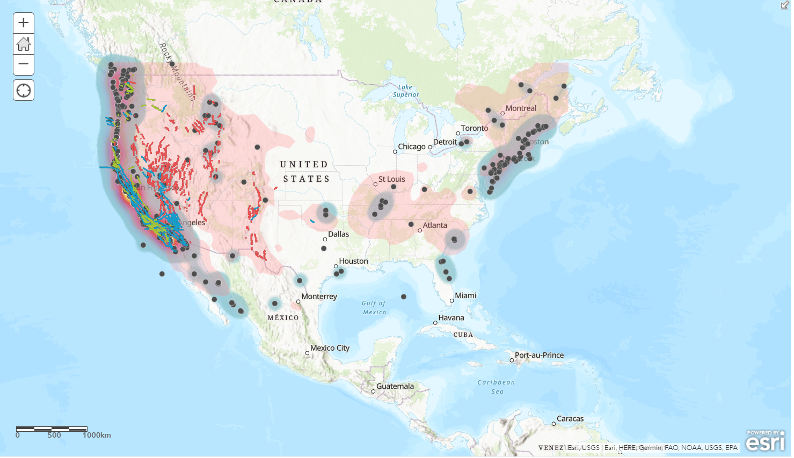
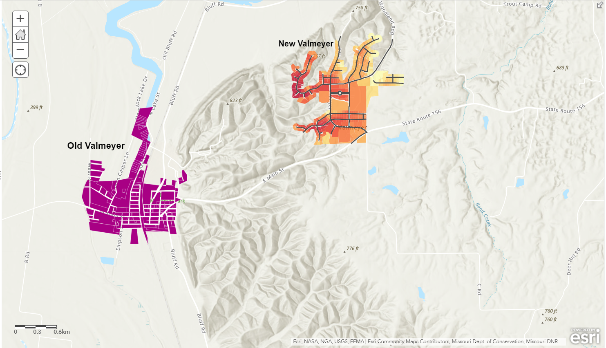
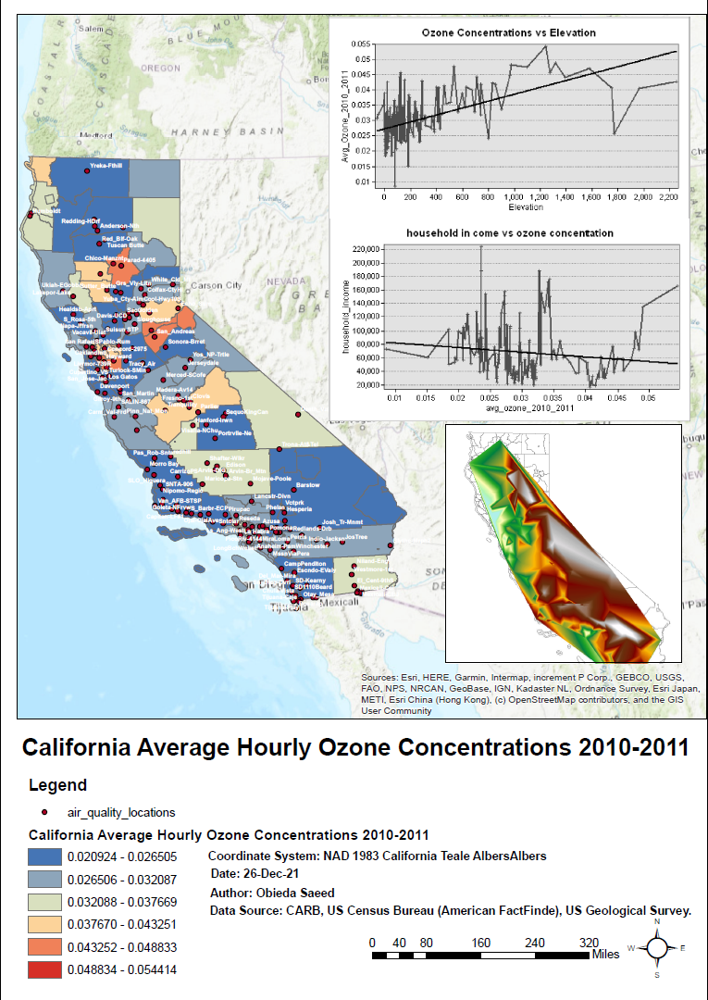
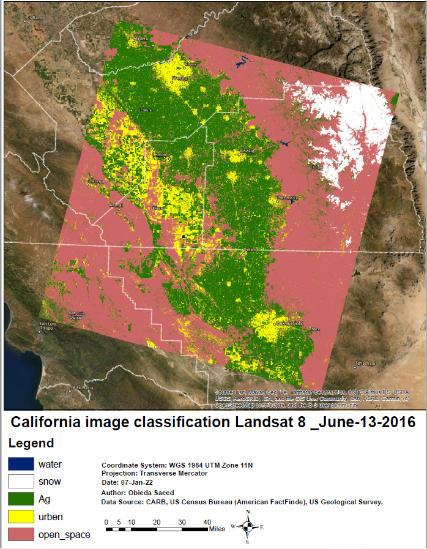

This map represents the ancient place of Valmeyer (Old Valmeyer) and the place where the study is being moved to (New Valmeyer) based on slope, elevation and distance Because the old city is under threat from flood waters from the nearby river.

After staying relatively inactive since, 201the Hunga Tonga–Hunga Haʻapai volcano erupted on 20 December 2021, sending particulates into the stratosphere . A large plume of ash was visible from Nukualofa , the capital city of Tonga, about 70 km (43 mi) from the volcano. The Volcanic Ash Advisory Center VAAC in Wellington , New Zealand, issued an advisory notice to airlines.This initial eruption ended at 02:00 on 21 December 2021. Volcanic activity continued, and on 25 December 2021, the island had increased in size on satellite imagery . As activity on the island decreased, it was declared dormant by the Tonga Geological Services on 11 January 2022.

We are concerned with what causes the buildup of ozone, a chemical beneficial high up in the atmosphere but harmful to human health when in the air we breathe. We are also interested in whether air with higher ozone concentrations disproportionately affects certain groups of people. We are going to be exploring the effects of elevation on ozone buildup and whether there is a connection between ozone buildup and household income. The main objective of this project was to explore the effects of elevation on ozone buildup and whether there is a connection between ozone buildup and household income in the state of California..

• The first step is to download the satellite images of the Landsat 8 satellite, on June 13, 2016 in a Zip file format
• Decompress files and add bands to ArcGIS
• Composite band to group the bands as one image, then modify the band with its actual number to correct the image's colors
• Open the toolbar and use the image classification. We start by taking samples for each of the water, agricultural land, urban, open spaces and snow, at least 10 samples each and renaming them with the name that represents the sample
• Merge the samples that represent each of the water, then the snow, then the agricultural land... and save the signature for later use
• Then we run on it the maximum likelihood classification in order to extract the required information from the samples that were entered after completion, we get a classified raster for these samples
• We change the colors to match the name they represent
• We move to Data Layout and add Legend, North Arrow, Scale, and Map Metadata
• We will extract it in PDF format so that it is ready for sharing
.

Four tiles for the southern region in Syria were downloaded from Landsat 8, uploded to Arc map and using Mosaic Tool to merge the tiles and deriving the DEM , then work with slope and aspect analysis
.

Choropleth map of the distributed quantities of items in the Syrian Arab Republic Some sensitive details have been hidden to keep the information confidential
.